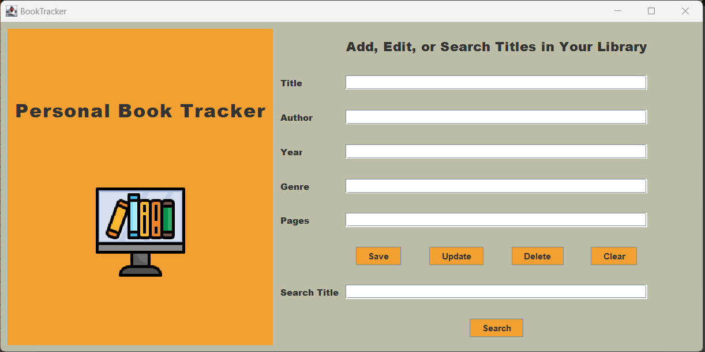
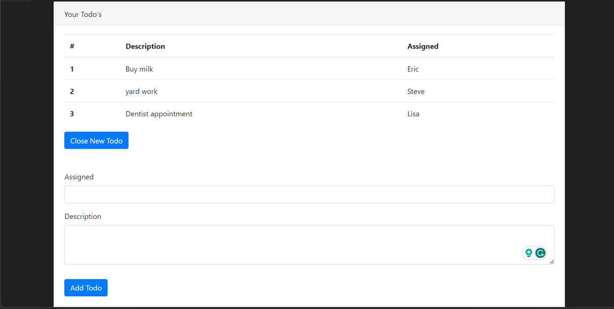
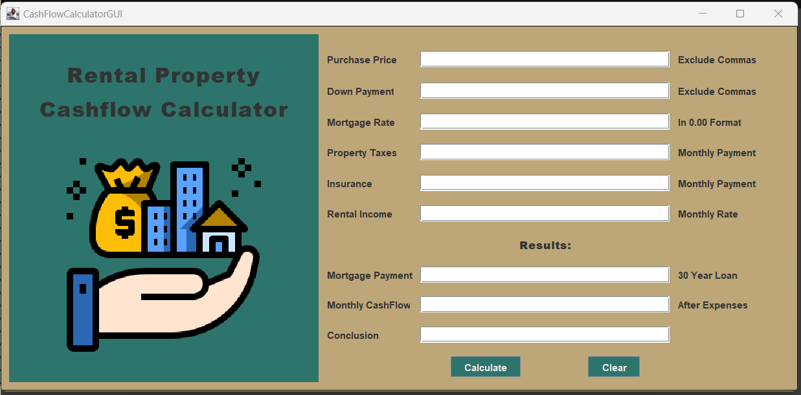
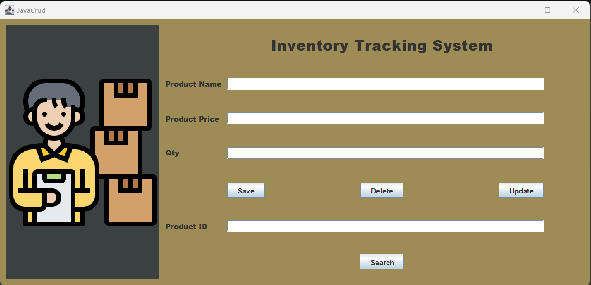
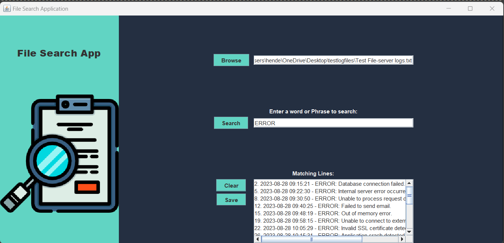

Book Tracker
Developed a book tracking system in Java using IntelliJ and Swing UI Designer to create the project GUI.
Designed the app to take inputs such as book title, author, year published, genre, and Pages.
Implemented Create, Read, Update, and Delete (CRUD) functionality for records stored in the app's database.
Enabled book search by title for a better user experience. Utilized XAMPP Control panel, Apache Server,
and MySQL Server to create and manage a locally hosted database for the project. Gained experience in planning,
creating, and deploying a CRUD application through the development of this project.


Developed a 'todo' web app using React, JavaScript, Bootstrap, and Visual Studio Code. The main objective behind this
project was to enhance my web development skills and gain hands-on experience in deploying a live application.
I am proud to share that I successfully deployed the project using Netlify's hosting services, making it accessible to
users on the web. The user can add new todo items by clicking on
the 'New Todo' button, which will render a form. To delete a completed todo item, the user would
simply need to click on the completed item.
Rental Cashflow Calculator

Developed a real estate investment calculator using Java, IntelliJ, and Swing UI Designer to determine if a rental
the property would be a profitable investment. Designed the app to take inputs such as purchase price, down payment,
mortgage rate, property tax, insurance, and expected rental income. Calculate the total expenses and subtract it
from the expected rental income to determine the profitability of the investment. Created a user-friendly interface for
easy use and understanding. This project is only locally hosted on my machine.
Inventory Tracking Application

Developed a simple inventory tracking system in Java using IntelliJ and Swing UI Designer to create the project GUI.
Designed the app to take inputs such as product name, price, and quantity. The user is able to create, read, update,
and delete records stored in the app DB. Utilized XAMPP Control panel, Apache Server, and MySQL Server to create and manage
a locally hosted database for the project. Gained experience in planning, creating, and deploying a CRUD application through the
development of the project.

Developed a file search application using Swing UI Designer, Java, and IntelliJ, this program allows users to browse their machine,
Select a file, and search for a specific word or phrase within the given file. The program displays the result in a scrollable
a text area for review. The user also has the option to save the results into a new file. This is a locally hosted Desktop application.
I used this project to gain experience using OOP concepts such as Classes, Objects, Encapsulation, Constructuctors, and Abstractions.